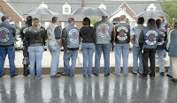

How we live now: Riding the subways in the "Land of the Free" in the Year of Our Lord 2008.
In late April, the mortal remains of 65-year-old Norman Stamp were interred in Essex, Maryland. Mr. Stamp, a member of a motorcycle club called the Chosen Sons, had been killed a few days earlier during a barroom brawl. The tussle capped an evening that had begun with the hazing of a new initiate into the Chosen Sons. And predictably enough, the whole thing started over contending territorial claims over women.
When police arrived at Haven Place in southeast Baltimore to break up the altercation, Stamp pulled on a set of brass knucks and charged into the fray. An officer hit him with a Taser blast, knocking Stamp to the floor. Recovering quickly, Stamp reportedly reached for a pistol and was killed when the officer shot him repeatedly at close range.

Among those who mourned Stamp's death was Sgt. Don Helms, a Baltimore police officer and chaplain of the local Fraternal Order of Police.
"He knew who the bad guys were. He knew who the good guys were," insisted Sgt. Helms, speaking of Stamp after his funeral. "He knew all his business people. He controlled the areas he worked in. He was Andy of Mayberry."
The crime scene: Haven Place, after the fatal shooting of Norman Stamp.

You see, Norman Stamp was not just a member of a motorcycle club, he was a 44-year veteran of the local police force. He was the third longest-serving officer in the force, and a founding member of the Chosen Sons, which was formed in 1969. His last words, reportedly, were: "I'm a cop."

He died on the evening he celebrated his 44th anniversary as a police officer, and presided over the initiation of a new member into a biker gang he helped create nearly 40 years ago.
As we learned last year when honorably discharged U.S. Marine Matthew Hale was gunned down by a paramilitary police force in Delaware, bike clubs aren't generally looked on with favor by police departments. But here we see Norman Stamp, an avatar of the beloved Sheriff Andy, spending his free time in a biker gang, eventually being shot to death by another police officer, and then being laid to rest with the familiar paramilitary pomp and ceremony that attend the burial of those members of the "civilian" police force who meet an untimely end.


Two gangs mourn an honored comrade: The Chosen Sons bike club (left), and the Baltimore Police Department (below, right).Both of the gangs of which Stamp was a proud member turned out to pay their respects: Officers from the Baltimore PD wore dress uniforms, and the Chosen Sons proudly displayed their club "patch" or insignia, a stylized red cross.
Fortunately, there was adequate manpower on hand to protect the public from a potential outbreak of criminal violence, since (as the Baltimore Sun reported) "Bikers from various clubs around the state outnumbered the uniformed police officers."

Much of the press coverage of Stamp's admittedly tragic death depicted him as a man straddling the gulf between two very different worlds. But this "gulf" is about a micrometer deep, and perhaps the width of a human hair. Most people would believe that police forces and biker gangs are at antipodes from each other. Norman Stamp considered them to be perfectly compatible
Decades of militarization -- in terms of hardware, tactics, and indoctrination -- have produced a police culture that differs from that of the typical Outlaw Biker gang in relatively trivial ways.
Consider, for one example, the shared ethic of comrades-in-arms.
Speaking of the Chosen Sons, Paul "Nitro" Treash, the group's sergeant-at-arms, told one reporter: "This lifestyle, it isn't for everybody. These guys will fight and die for each other."

Of course, police officers are bound by a very similar sense of camaraderie -- the knowledge that someone's got your back as you confront a dangerous and unpredictable world. This is a noble and virtuous ethic. But like all other human virtues, it can degenerate into an insufferable sense of elitism and a thuggish impulse to punish perceived slights to the colors.
Many motorcycle clubs resist that impulse. Police forces are increasingly given permission to indulge it.
That's what appears to have happened in Philadelphia on Monday night (May 5), when somewhere between twelve and sixteen officers converged at a traffic stop involving two teenage suspects. The police break up into two groups; in each, several officers hold a prone individual to the ground as he is repeatedly punched, kicked and (in one case) beaten with a baton. A video of this incident shows a third individual also being kicked and thrown to the ground.
Police Commissioner Charles Ramsey, allowing that the videotaped incident "certainly does not look good in terms of the amount of force that was used," explained that his officers had been "on edge" for several days following a fatal shooting of a fellow officer. He also claimed that officers were responding to a report of a nearby shooting, but didn't say that the people thrown to the ground and beaten had any connection to that alleged incident.
We hear this excuse quite a bit: The public is invited to sympathize with a police officer caught abusing some helpless schlep because the cop was "on edge" owing to some recent incident in which a policeman was on the short end of a violent confrontation. Oddly enough, however, we've yet to see a case in which we're urged to display similar empathy toward a citizen -- "on edge" because of recent police violence -- who shoots an innocent cop.
What we see in the video clip above is a phenomenon I've named a "Thugswarm." This isn't an example of peace officers protecting the public from lawless violence. This is an assault carried out by an armed gang, just as surely as if the assailants had been wearing the colors of the Hell's Angels. (Come to think of it, didn't that biker gang insist that the bloodshed at Altamont was no big deal because they were feeling a bit "on edge" owing to the size of the crowd?)
Every government, pared to its irreducible essence, is an armed gang with a territorial monopoly on "legitimate" force. In the "war on crime" that began decades ago under Nixon, police agencies across the country frequently behave as if their priority is to beat back competition from rival gangs, while keeping the public properly subdued.
At about the same time Baltimore was absorbing the implications of Norman Stamp's fatal shooting by a fellow police officer, New York City was "on edge" -- yes, again -- as three police detectives were exonerated in the fatal shooting of Sean Bell, an unarmed man going home from his bachelor party about a year ago.
The officers were undercover as patrons of a t*tty bar (yes, they get paid for that kind of "work") and didn't identify themselves before they opened up on Mr. Bell's vehicle.
Death by Government: Sean Bell, seen here with his lovely fiancee and their absolutely beautiful baby daughter, was hours away from assuming the duties of marriage and fatherhood when his life was ended in a fifty-shot fusillade by NYPD detectives. Unfortunately, while Sean's murderers were "persons," he was merely part of the "people," so they won't be punished.

They claimed later that they thought they saw a gun in Bell's car. Well, why wouldn't Bell have a gun, and perhaps even reach for it when his car is suddenly surrounded by disreputable-looking people at 4 in the morning?
Well, according to Judge Arthur F. Cooperman, as a matter of "law," Bell's concerns are irrelevant: said that did not matter under the law. In assessing whether the officers were guilty of a crime, Cooperman ruled, "It was necessary to consider the mindset of each defendant at the time and place of occurrence, and not the mindset of the victims.”
In other words: The police on the scene had an unqualified right to kill, and Sean Bell -- just a few hours away from his wedding -- had an unavoidable duty to die.
This doesn't make sense to reasonable people. Which is why, as soon as their comrades were acquitted, the NYPD formed the kind of protective scrum we'd expect to see from any other armed gang:
"The colors rippled along Queens Boulevard in a declarative statement. Clad in royal blue polo shirts and pullovers, men and women stood in ranks five or six feet apart, their public identity instantly apparent from the gold-stitched lettering, “NYPD Community Affairs,” that blazed across their chests and backs. On their heads they wore navy blue baseball caps with big white letters that said “NYPD. It was two minutes before 9 on Friday morning, and 98 police officers stretched in unmistakable presence along the sidewalk outside the Queens courthouse. They formed a human flag, flying the colors of the New York Police Department."
Within a week or so of this display of gang solidarity -- albeit from a government-sanctioned gang -- a federal indictment was released in Brooklyn dealing with the criminal violence carried out by a private sector gang that behaved exactly like the NYPD.
This "sadistic gang of police impersonators" were accused of abducting and torturing scores of cocaine dealers along the East Coast, "forcing them to hand over multimillion-dollar stashes by threatening to squeeze their testicles with pliers...." They also availed themselves of other forms of "enhanced interrogation techniques," including waterboarding.
But, y'see, when these guys did it without government permission, using those methods was a Bad Thing.
In addition to being ready to go all John Yoo on their captives, this gang followed the same methods used by State-supported gangs -- conducting surveillance of suspects, packing the same weaponry, equipping their vehicles with sirens and running lights, and even conducting its own Thugswarms.
Bronx District Attorney Robert Johnson, standing -- as it were -- at the crossroads* of State-sanctioned police violence and its increasingly efficient private sector simulacrum, created the verbal equivalent of an M.C. Escher illustration, describing what he saw as "a dangerous dance of alleged criminals preying upon alleged criminals, who profited from the desperation of drug abusers."
It's much simpler than that, of course. What's happened is that as the Cops have grown more thuggish, the thugs have grown more Cop-ish, until -- like Orwell's pig-men -- it's become all but impossible to tell one group from the other.
One quick note...
Among my most valued correspondents is a police detective in New York who is a deeply committed Christian and sincere proponent of minimalist government. He is emphatically not the kind of man who would commit any of the acts of lawless violence I write about and condemn.
Like many other decent men who went into law enforcement, my friend is caught between the genuine problem of street violence and a police culture that is increasingly inhospitable to liberty. He does what he can to protect the innocent from the former, and to hold the latter at bay.
While I am convinced that there are much better ways to secure the rights of individuals than our present system, I also respect those who, like my friend, are doing what they can within that system to mitigate its emerging horrors. If, God forbid, the balloon goes up, people like my friend aren't going to choose the Bonapartist option of making war on my citizenry. Should that day come, I think we may be pleasantly surprised by the number of "defectors in place" who reveal themselves as our allies.
I'm sure many of you have friends, relatives, or other acquaintances in law enforcement who are dealing with predicaments like that of my friend. I pray for him quite often, and those of you who pray might want to remember him, and others like him, as well.
*Sorry about that.
 On sale now at Amazon.com!
On sale now at Amazon.com! Dum spiro, pugno!
20 comments:
This is an incredible event. And interesting that the cops are protecting Torres- even after he had killed another cop. Two cops lives are destroyed by this. It's hard for me to imagine that Torres has a future as a cop after this. He will not be prosecuted, but if he tries to come back the other cops will not be kind.
Dan
I will never, ever believe that "most cops are good, but there are only a few bad apples." Such beast-like behavior comes with the profession. That's because A) They have a monopoly on violence. B) They are only ever "investigated" by their own departments, and more abstractly, by their employer (the local government.) The local government doesn't want to pay out settlements or admit guilt. So they don't.
C) If you give a man a firearm and a badge, and tell him that he has rights to do things that other people can't do without getting thrown in prison, he will often turn into the type of savage, hooting primates you see swarming the driver in the video. All beasts know how to use clubs and/or their appendages as weapons.
-Sans Authoritas
One would think there would be a point where people would just say enough is enough. One would be wrong.
We hear this excuse quite a bit: The public is invited to sympathize with a police officer caught abusing some helpless schlep because the cop was "on edge" owing to some recent incident in which a policeman was on the short end of a violent confrontation. Oddly enough, however, we've yet to see a case in which we're urged to display similar empathy toward a citizen -- "on edge" because of recent police violence -- who shoots an innocent cop.
You hit the nail on the head. That's it, in a nutshell.
I'm sick and tired of cops being the biggest, baddest group of armed thugs in this country. I hear it all the time, time after time, from friends and from strangers.
The case of Mr. Stamp is interesting insomuch as he was gunned down by 'one of his own'. How unfortunate that this is actually a good thing for anyone at all concerned with liberty - when they start to 'eat their own' we are making some ground. He may have been a good man, but he was in the employ of a flawed ideology (gov't - bikers are ok by me).
I rarely take issue with anything you post, but this item caught my eye:
'Every government, pared to its irreducible essence, is an armed gang with a territorial monopoly on "legitimate" force.'
While I agree that this is the accepted definition - one must never lose sight of the fact that government power, all of it, was ceded to it by the people who have a right to reclaim it if necessary or appropriate. Not disagreeing just offering a clarification that escapes most of the sheeple, who sorely need reminding.
anonymous, your clarification is very important and much appreciated!
So this cop goes to a side door to prevent more bar patrons from joining the fray, but one emerges wearing brass knuckles (probably had a few drinks in him, too), allegedly doesn't comply with the cop who is trying to prevent more people from being involved, Tases him when he doesn't comply, then he pulls a pistol while he's down from being Tased.
The chances of this poor fellow being shot are pretty good.
Off duty, bar-hopping cops must adhere to some rules: Leave you're gun, brass knuckles (I didn't those were still manufactured), and badge home. If you're drinking with the boys, keep your mouth shut when disturbances arise. Be careful of the company you keep (rowdy bars). Have a sober driver handy who can intervene when he sees you doing something stupid.
What a sad story.
You raise an important issue, Will: The camaraderie and the impulses to protect those who you are close to. I can understand this behavior when it is exhibited by any tight group. But seeing it in the form of retaliation by agents of the government is unacceptable. Seeing the behavior of private gangs and government gangs becoming increasingly indistinguishable is scary.
Your acknowledgement and request for prayers for "defectors in place" warms my heart. Unfortunately, many cops will do anything for OVERTIME in the pay check. And the defectors can do little without the help from the legislators who pass repugnant laws. It's not like they'll quit their jobs.
I guess we can assume by now that the US government will never suffer blowback from the docile herd.
quid nunc,
Obviously, the police wouldn't have beaten anyone if they didn't deserve it.
Blowback? Are you saying that these police and government actions are, in part, a cause of any potential retaliation? The police and the government that they serve are America. Are you one of those "blame America first" people?
Don't you know that those brave boys in blue are just doing their job? (And a difficult, thankless one, at that.) They are out there every day, preventing us from being set upon by baying packs of violent thugs, robbers, and rapists who want to control every aspect of our lives. If it weren't for those brave boys with badges who are superior in every way, both morally and physically, we'd be reduced to chaos! We'd all be sinking our teeth into the still-warm flesh of freshly-killed kittens, and slaking our thirst with their blood. Is that what you want? Anarchy?
Show some respect!
[Sans Authoritas advises those with reduced sarcasm capability to put on sarcasm-colored glasses to read this post.]
-Sans Authoritas
Fred said:
Off duty, bar-hopping cops must adhere to some rules: Leave you're gun, brass knuckles (I didn't those were still manufactured), and badge home. If you're drinking with the boys, keep your mouth shut when disturbances arise. Be careful of the company you keep (rowdy bars). Have a sober driver handy who can intervene when he sees you doing something stupid.
That's certainly what sensible human beings would do in similar circumstances. Unfortunately, we're talking here about cops, a breed of human beings who not only do not follow "rules" of any kind, but believe that they are above not only the law they have sworn an oath to uphold, but also normal rules of civilized human behavior that govern the actions of 95 percent of the rest of humanity. (I'm leaving a five percent margin here for what I estimate to be the percentage of the world's population employed directly by some form of government and endowed with the authority to use lethal force against their fellow humans, justified or not, at will.)
Sans Authoritas,
I always enjoy your wit and sarcasm. Great remarks.
"...one must never lose sight of the fact that government power, all of it, was ceded to it by the people who have a right to reclaim it if necessary or appropriate."
Yes. That's so true. Now when we ask for that power back and THEY don't do so (no surprise there) what recourse is left to us? I can tell you that "voting" in rigged elections will have little effect. So will they "allow" us to pull a 1776 and do what the founders did, those paragons of freedom we're repeatedly told, and strike out for freedom and separate ourselves?. Would all the lip service given for democratic movements across the globe ever be uttered within the continent? It makes one wonder.
I knew the cops are one of the approved, state sanctioned gangs from a young age. The schooly system always tried to kick me out for discussing the NWO and waking the other children up. Our evul public school system had us read "Animal Farm" I know that is not going on anymore. I wonder if the cops will tell us what the ratio is how many of us unwashed cattle equals one police officer. I heard somewhere the police won't take anyone with a triple digit IQ so they are probably not smart enough to realize "the state" will toss them to the curb when they are no longer useful.
Your comment about those who serve as police and do their best to keep lawlessness at bay while protecting the innocent from excessive force is appreciated. There are some in the military in the same boat--who see legitimate enemies our nation needs to be ready to defend against, but who also realize their oath was to "defend the Constitution against ALL enemies, foreign and domestic." Some are concerned there are more of the latter to worry about. Your potential allies, should the balloon go up, don't just wear police blue.
Thank you for the work you put into informing your readers of things largely ignored everywhere else.
These articles were forwarded to me by an aquaintance and i thought these snippets were appropriate to your post Will.
Last week an AP report headlined Massachusetts Police Get Black
Uniforms to Instill Sense of 'Fear' detailed the move:
Sgt. John Delaney told a city council hearing Wednesday that the stark uniforms send a message to criminals that officers are serious about making arrests.
Delaney said a sense of "fear" has been missing for the past few years.
In recent years police in cities all over America have been increasingly seen in all black attire.
The introduction of black police uniforms has an ominous precedent. In 1932 Hitler's propaganda chief Heinrich Himmler famously introduced black uniforms for SS police, tailored to project authority and foster fear and respect. The choice of color was not by chance.
It is believed that the Nazis took the idea from the "blackshirts" in Italy years before the creation of the SS.
A 2001 FBI Law Enforcement Bulletin has summarized research on police uniforms and noted the psychological influence they have:
Research has suggested that clothing has a powerful impact on how people perceive each other. The police officer's uniform has a profound psychological impact on others, and even slight alterations to the style of the uniform may change how citizens perceive them.
The studies cited found that black uniforms elicit emotions of anger, hostility, dominance, and aggression…”
Mot comments: "Now when we ask for that power back and THEY don't do so (no surprise there) what recourse is left to us?"
I have pondered the question of recourse for many years now and, as you, have come to the conclusion that there is no recourse within the system - it is self-reinforcing, not self-correcting. With that in mind one has to weigh the possible options left.
The first question you have to honestly ask yourself is "are you willing to give up everything, even your life, to effect a change that you might never see yourself?" If a person cannot answer yes to that question then they will always have the question of what to do unanswered while they wait for others to act where they will not.
When you do answer yes to that question, and it is a very personal decision, you will begin to see options (ugly though they may be) that you would not have considered previously.
I sometimes wonder whether economic ruin wasn't Bin Laden's actual plan. If so, he has been a brilliant tactician and our pols have walked right into the trap. That said, our country is on the brink of a tipping point and it will not take much to nudge it over the edge. It won't take a militia, only a few well executed 'incidents'. The problem is one can never predict what the resultant outcome will be. Chaotic systems are that way.
As Morpheus in the Matrix would say "Free your mind" . . .
Video link is farked. The man is everywhere.
Were the police, whether federal or local, EVER professional? Or was it all PR SPIN? I begin to think it was always spin.
Suspects MUST be treated professionally. We don't see that.
Inmates in prisons should be treated professionally, we do not see that.
What happened in Philadelphia is not due to race, I think, but due to how law enforcement views all citizens now, all civilians now.
In Brazil the police are corrupt also. In Mexico the police are corrupt also. In Africa the police are corrupt also. Asia I don't know about but I am sure it can't be that different.
Europe I know that they are often as brutal also.
Christian nation? I think not.
I meet many people who go to church, go to Bible study, but meeting a Christian is a rare, rare thing in life.
America is DONE. The Greatest Generation voted it out of existence.
I admire WNG for fighting on but this is a sewer morally and the American character is psychopathic.
It's amazing just how much this subway guard resembles the big gold robot in the movie The Day The Earth Stood Still.
Isn't it ironic that someone would choose a career field that claims to protect the citizenry and solve crime and violence while all along its part of the problem.
Post a Comment